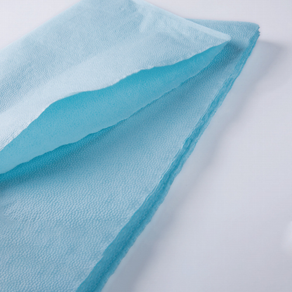

In a busy dental practice, a single operatory can consume three to eight dental bibs per day — and a multi-chair practice with five or more operatories can easily use twenty to fifty bibs daily. Despite this volume, dental bibs remain one of the lowest-cost items in a practice's supply inventory. The temptation, therefore, is to treat them as a commodity and select solely on price. But the quality of a dental bib directly affects patient comfort, infection control outcomes, and the overall perception of clinical professionalism.
This guide is written for practice managers, dental supply coordinators, and procurement officers who need to understand the trade-offs between different dental bib types and make informed purchasing decisions that balance cost, quality, and compliance.
What Is a Disposable Dental Bib?
A disposable dental bib (also called a dental napkin or dental patient bib) is a protective barrier placed over a patient's chest and lap area during dental treatment. Its purpose is threefold:
- Patient protection. The bib prevents water, saliva, blood, dental materials, and debris from soiling the patient's clothing — a basic courtesy that significantly impacts patient comfort and satisfaction.
- Infection control. By providing a single-use barrier, disposable bibs eliminate the cross-contamination risk inherent in laundering and reusing cloth bibs. This is increasingly important as infection control standards in dentistry continue to tighten globally.
- Clinical workflow efficiency. Disposable bibs are pre-folded, individually wrapped or boxed, and require no laundering — reducing staff time and eliminating the logistics of an in-practice linen service.
Most dental bibs are secured with a metal or plastic clip attached to the patient's clothing, though some practitioners prefer bibs with adhesive tabs or self-locking mechanisms for specific procedures.
Material Types: Tissue, Tissue-Poly, and Nonwoven
Dental bibs are manufactured in several material configurations, each with distinct performance characteristics:
Single-Ply Tissue Bibs
Constructed from a single layer of absorbent tissue paper, single-ply bibs are the most economical option. They provide basic splash protection but have limited absorption capacity and tear resistance. These are suitable for brief, low-splash procedures such as examinations, consultations, and simple restorations.
- Pros. Lowest cost per unit. Lightweight and compact for storage. Adequate for short, dry procedures.
- Cons. Tears easily when wet. Limited absorption capacity — may need to be replaced mid-procedure during longer treatments. Not recommended for surgical or high-splash procedures.
Tissue-Poly (Tissue + Polyethylene Film) Bibs
The most popular configuration in the industry, tissue-poly bibs combine an absorbent tissue outer layer with a waterproof polyethylene film inner layer. The tissue side faces outward to absorb splashes, while the polyethylene backing prevents liquids from penetrating through to the patient's clothing.
- Pros. Excellent liquid barrier performance. Good absorption capacity from the tissue layer. The polyethylene backing provides a moisture-proof seal — the patient's clothing stays dry even during extended procedures with significant water spray. Resists tearing better than single-ply tissue.
- Cons. Slightly higher cost than single-ply tissue. Slightly less flexible than pure tissue bibs, though still comfortable for the patient.
Nonwoven (Spunlace) Bibs
Manufactured from spunlace nonwoven fabric, these bibs offer a soft, cloth-like feel that many patients find more comfortable than paper-based alternatives. They are typically more absorbent than single-ply tissue and more flexible than tissue-poly constructions.
- Pros. Superior softness and patient comfort. Good absorption. More durable and tear-resistant than tissue-based bibs. Premium feel enhances the patient experience — particularly valued in cosmetic and specialty practices.
- Cons. Highest cost per unit. Not all nonwoven bibs include a waterproof backing layer, so liquid penetration to clothing can occur during high-splash procedures unless a backed variant is selected.
| Property | Single-Ply Tissue | Tissue-Poly | Nonwoven (Spunlace) |
|---|---|---|---|
| Cost per unit | Lowest | Low to moderate | Moderate to high |
| Absorption | Basic | Good | Good to excellent |
| Liquid barrier | None (porous) | Excellent (PE backing) | Variable (depends on backing) |
| Tear resistance | Low | Moderate | High |
| Patient comfort | Adequate | Good | Excellent |
| Best for | Examinations, consultations | General dentistry, hygiene appointments | Specialty, cosmetic, premium practices |
Standard Sizes and Weights
Dental bib dimensions follow industry conventions, though exact measurements vary by manufacturer:
| Size | Approximate Dimensions | Best For |
|---|---|---|
| Standard / Adult | 33 × 45 cm (13 × 18 in) | Adult patients in general dentistry, hygiene, and restorative procedures. The most commonly used size worldwide. |
| Large / Extra-Wide | 38 × 45 cm (15 × 18 in) or wider | Larger patients, oral surgery procedures with higher fluid volumes, and practices seeking maximum coverage area. |
| Paediatric | 25 × 35 cm (10 × 14 in) | Children's dentistry. A smaller size that fits paediatric patients comfortably without excess material that could interfere with the clinician's work area. |
Base weight (grams per square metre, GSM) also affects performance. Lighter bibs (18-22 GSM) are more economical but less absorbent; heavier bibs (28-35 GSM) offer better absorption and durability. Tissue-poly bibs typically combine a 22-28 GSM tissue layer with a 12-15 GSM polyethylene film.
Bib Clips and Attachment Methods
The method of securing the bib to the patient's clothing matters for both safety and convenience:
- Metal snap clips. The traditional and most widely used attachment. A metal spring clip snaps onto the bib's reinforced corner hole and the patient's clothing. Inexpensive and reliable, though some patients report a slight pinching sensation if the clip contacts skin. Clips are reusable and should be disinfected between patients.
- Plastic clips. Lighter than metal and available in various colours. Some practices prefer plastic clips because they can be colour-coded by operatory or procedure type. Generally gentler on patient clothing than metal clips.
- Adhesive tabs. Self-adhesive strips on the bib eliminate the need for clips entirely. The bib sticks directly to the patient's clothing. This is the fastest application method and eliminates clip cross-contamination risk, though adhesive performance can vary with fabric type and humidity.
- Self-locking / tab-and-slot. A mechanical closure built into the bib itself — a tab is inserted through a slot to secure the bib around the patient's neck. No separate clip required. Convenient and hygienic, though slightly higher per-unit cost.
For infection control best practice, metal and plastic clips should be cleaned and disinfected between patients, or alternatively, each patient should receive a freshly disinfected clip from a batch rotation. Adhesive-tab and self-locking bibs eliminate this step entirely.
Embossing, Printing, and Custom Branding
Many dental bibs feature embossed or printed patterns — from simple geometric designs to branded practice logos. While this is primarily aesthetic, embossing can marginally increase the surface area and thus the absorption capacity of the tissue layer.
For dental supply distributors and group practices, custom-printed bibs with practice logos offer a professional touch that reinforces brand identity at every patient appointment. Newrise Medical supports OEM customisation including embossing patterns, packaging design, and logo printing on bulk orders.
Consumption Benchmarks for Procurement Planning
Understanding consumption rates helps procurement managers set appropriate par levels and negotiate volume pricing:
- Single-chair general practice. 600 to 1,200 bibs per month (20-40 per day), depending on patient volume and appointment types. Hygiene appointments typically use two bibs per visit (one for examination, one changed for the cleaning procedure).
- Multi-chair practice (4-6 operatories). 2,500 to 6,000 bibs per month. High-volume practices should consider pallet-level ordering to reduce per-unit cost and ensure consistent supply.
- Paediatric dental practice. Similar volumes to general practice, but with a higher proportion of paediatric-sized bibs. Some practices stock both adult and paediatric sizes and select per patient.
- Oral surgery / periodontal practice. Higher per-patient bib consumption due to the need for bib changes during longer procedures. Practices may use tissue-poly or nonwoven bibs exclusively for their superior barrier performance.
Procurement best practices:
- Buy in bulk. Dental bibs are lightweight, non-perishable, and compact — storage space is rarely a constraint. Ordering in cartons of 500 or 1,000 units (or pallet quantities for larger practices) reduces per-unit cost significantly compared to small-pack purchases.
- Standardise on one type. Unless your practice has specific requirements for different procedure types (e.g., nonwoven for surgery, tissue-poly for hygiene), standardising on a single bib type across all operatories simplifies inventory management and enables larger-volume orders at better pricing.
- Include bib clips in your order. If you use clip-secured bibs, ensure an adequate supply of clips (metal or plastic) is ordered alongside the bibs. Clips are reusable but are frequently lost or damaged.
- Par level. Maintain 4 to 8 weeks of stock. At 500 bibs per month, this means 2,000-4,000 units on hand — easily stored in a supply closet.
"We switched from cloth bibs to disposable tissue-poly bibs three years ago and never looked back. The elimination of laundering costs alone paid for the change within six months. But the real win was in infection control — our compliance audit scores improved noticeably, and patients consistently comment on how fresh and clean everything feels." — Practice Manager, 4-Operator Family Dental Clinic
Regulatory and Compliance Considerations
While dental bibs are generally classified as non-sterile, single-use protective barriers (not medical devices requiring regulatory clearance), reputable manufacturers still adhere to key standards:
- ISO 13485. Manufacturers certified to ISO 13485 for medical device quality management demonstrate a commitment to consistent production quality, even for non-device consumables.
- Material safety. Tissue and polyethylene materials should be free from harmful additives, dyes, or fragrances that could cause skin irritation. Request material safety data sheets (MSDS) with your order.
- Biocompatibility. While bibs do not directly contact mucous membranes, the portion near the patient's neck may contact skin. Materials should be dermatologically tested and free from known allergens.
- Environmental disposal. Dental bibs are single-use waste. Tissue-poly bibs are generally not recyclable due to the composite material structure. Nonwoven bibs from certain materials may have better environmental profiles. If your practice has sustainability commitments, discuss options with your supplier.
Disposable vs. Cloth Dental Bibs: The Total Cost Picture
Some practices still use cloth (linen or cotton) bibs, which are laundered and reused. While the per-unit cost of a cloth bib appears lower over its lifespan, the total cost analysis typically favours disposables:
| Factor | Disposable Bibs | Cloth (Reusable) Bibs |
|---|---|---|
| Per-use cost | Low (cents per unit) | Moderate (purchase + laundering amortised) |
| Laundering | Not required | Required — water, energy, detergent, labour, or external linen service fees |
| Infection control | Excellent — single use, no cross-contamination risk | Dependent on laundering quality and temperature; risk of residual contamination if laundering is suboptimal |
| Storage and logistics | Compact, lightweight boxed supply | Bulkier; requires clean and soiled linen separation and storage |
| Patient perception | Fresh, single-use — conveys hygiene awareness | Varies — some patients perceive cloth as more premium, others may question reuse |
| Replacement cycle | Ongoing supply ordering | Cloth bibs degrade, fray, and discolour over time; periodic replacement required |
For most practices, the elimination of laundering logistics and the improved infection control profile make disposable bibs the superior choice — particularly as labour costs and energy prices continue to rise globally.
Conclusion
Disposable dental bibs are a small but essential component of modern dental infection control and patient comfort. Selecting the right material type, size, and attachment method — and procuring them at the right volume and price point — directly affects both clinical efficiency and the patient experience. Tissue-poly bibs remain the industry standard for general dentistry, offering the best balance of absorption, barrier performance, and cost. Nonwoven bibs are gaining traction in premium and specialty practices where patient comfort and presentation are paramount.
Newrise Medical manufactures disposable dental bibs in tissue, tissue-poly, and nonwoven configurations, in adult and paediatric sizes, with OEM customisation available for embossing, printing, and packaging. CE marked, ISO 13485 certified production, and competitive bulk pricing. Contact us for samples and pricing →